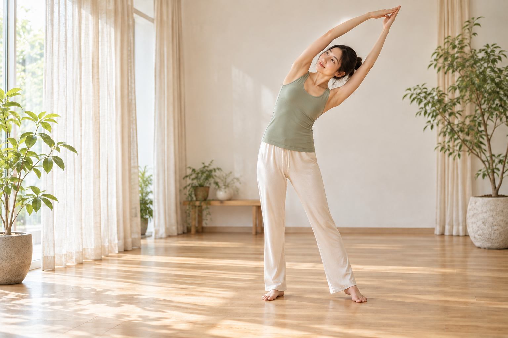
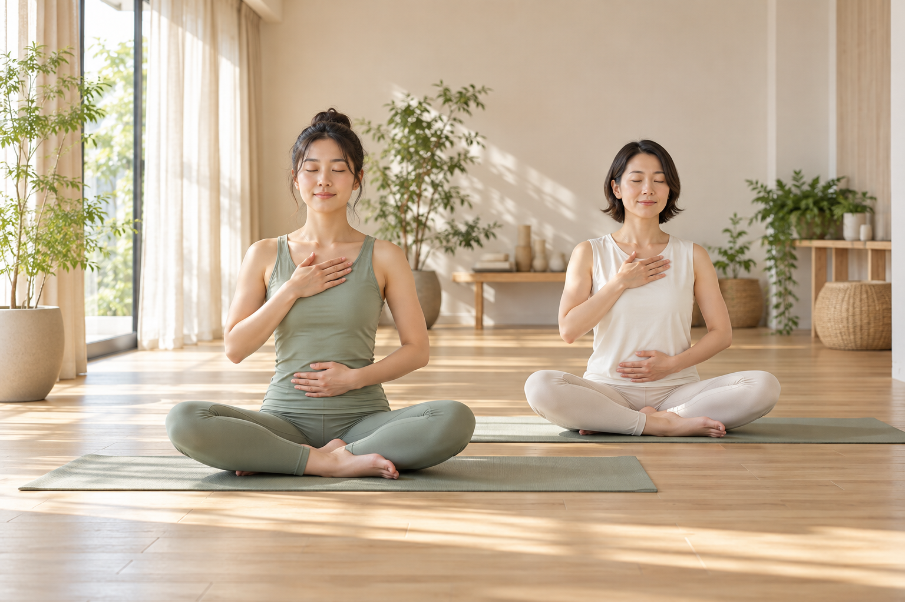
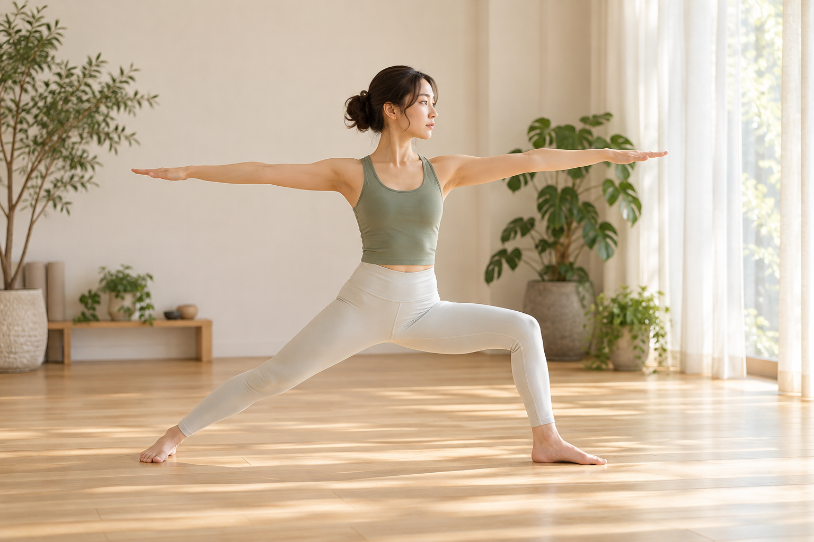
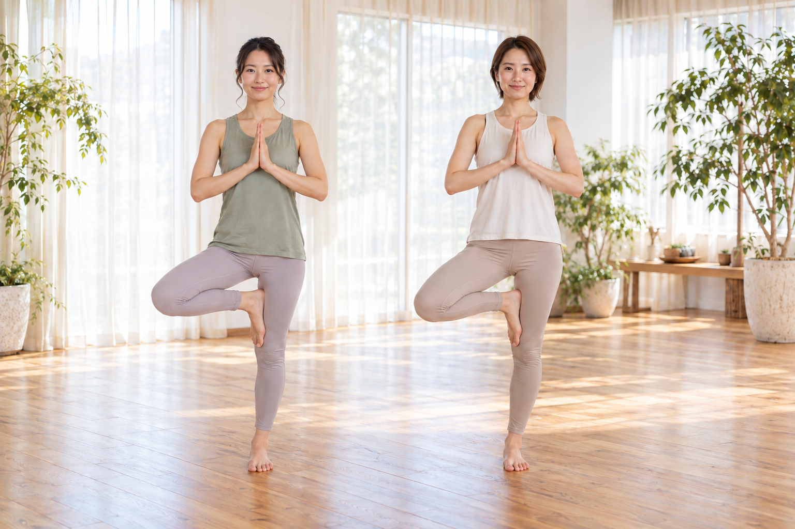
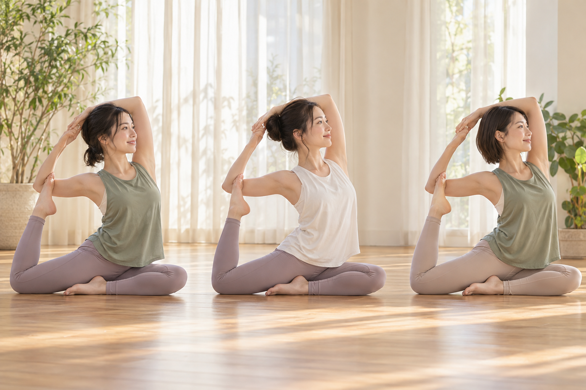
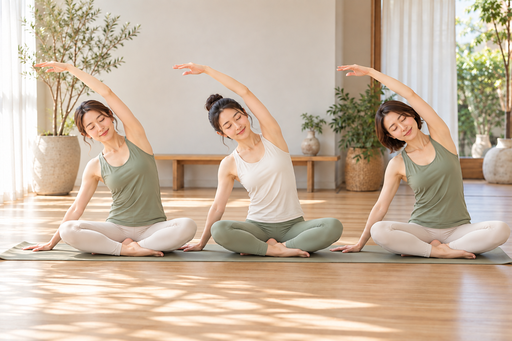
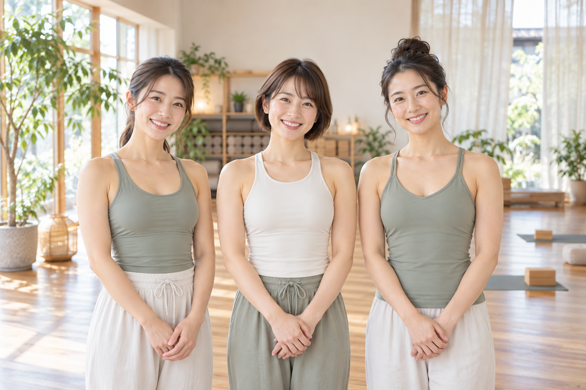

はじめてに、寄り添う。
呼吸のしかたから、一つひとつ丁寧に。
経験や柔軟性を気にせず参加できます。
A LITTLE SPACE FOR YOURSELF
BREATHE. COME BACK TO YOU.
手ぶらで、気軽に体験。
忙しい毎日に、ひと呼吸の余白を。
はじめての方のための、やさしいヨガ。





心地よさを、あなたのペースで。YOH AKU YOGA
気づけば、いつも誰かや何かのために。
自分のことは、あとまわしになっていませんか。
余白 YOGAは、呼吸とからだに耳をすませる場所。
ポーズの美しさより、今の心地よさを大切に。
からだが硬くても、ヨガがはじめてでも大丈夫。
あなたのペースで、少しずつはじめましょう。
呼吸のしかたから、一つひとつ丁寧に。
経験や柔軟性を気にせず参加できます。
一人ひとりの様子を見ながら進める、
定員６名の落ち着いたレッスン。
手ぶらで参加できるから、
準備の負担なく。
お仕事帰りや、お出かけの合間にも。
IS THIS YOU?
今のあなたの気持ちから、はじめてみませんか。
日々のコンディションを整えたい方へ。感じ方や変化には個人差があります。
JUST BE.
ありのままの、自分と。
02 — LESSON & PRICE
やさしくからだをほぐし、呼吸を深める60分。
その日の自分に合った、心地よい動きを探します。
FIND YOUR PRACTICE
どのクラスも、はじめての方から。
全身をゆっくり動かして、心地よい一日のはじまりに。
基本のポーズと呼吸を、自分のペースでじっくりと。
一日の緊張をほどく、穏やかな動きと静かな時間。

COMFORT & PEACE OF MIND
シャワールームや更衣室、ロッカー、トイレ（男女別）、駐車場・駐輪場を完備。快適にお過ごしいただけます。
9:00〜21:00まではスタッフが常駐。防犯カメラは24時間見守っているので、安心してレッスンを受講できます。
04 — YOUR GUIDE

TOGETHER, AT YOUR PACE.
その日のからだと相談しながら、無理のない動きを。
小さな疑問も、遠慮なく聞いてください。
はじめの一歩を、丁寧にサポートします。
インストラクター紹介 Yohaku team
まず、自分の体のラインが大きく変化したのがとても嬉しいです！！ヨガを始めてから食事への意識も変わり、体の不調や変化にも気づけるようになりました。デスクワークで肩凝りがひどかったですが、悩む日もほとんどなくなりました♪
余白さんを選んだ理由としては、短期的ではなく長期的にする方針が自分の希望と合致したことです。あとはインストラクターの熱意と真摯な姿勢。人も場所も清潔感がありました。
最初はダイエット目的でしたが、途中から「一緒にヨガできること自体」が楽しみになりました。結果として肉体面だけでなく、メンタル面への良い効果を実感しています。
ご指導のおかげで第1の目標を達成することができました。ここまで、自分一人ではとても達成できなかったと思います。どんな時も明るく励ましてくださるおかげで一人では「もう無理」と思って諦めてしまうようなことも頑張れます。また、食事や栄養のお話もとても役に立っています。次の目標に向かって、これからもどうぞよろしくお願いいたします。
YOUR FIRST VISIT
気になるクラスを選択。ご不安なことも予約時にお伝えください。
手ぶらで気軽にお越しください。お着替えや準備の流れは、予約時にご案内します。
まずは呼吸から。無理せず、その日の心地よさを大切にしましょう。
QUESTIONS & ANSWERS
BEFORE YOU BEGIN.
はい。柔軟性に合わせて、無理のない範囲で動きます。ポーズの完成形を目指す必要はありません。
お一人でも参加を歓迎しています。初回はレッスン前に流れをご案内します。
手ぶらでご参加いただけます。体験用のヨガマットは無料です。ウェアなどのレンタル内容・料金や当日の準備については、ご予約時にご案内します。
体験のみの参加も可能という想定です。継続プランやキャンセル規定は、運営内容の確定後に掲載します。
A MOMENT, JUST FOR YOU
手ぶらで気軽に、ひと呼吸からはじめませんか。
ACCESS & INFORMATION
こころとからだに、余白をつくるヨガスタジオ。